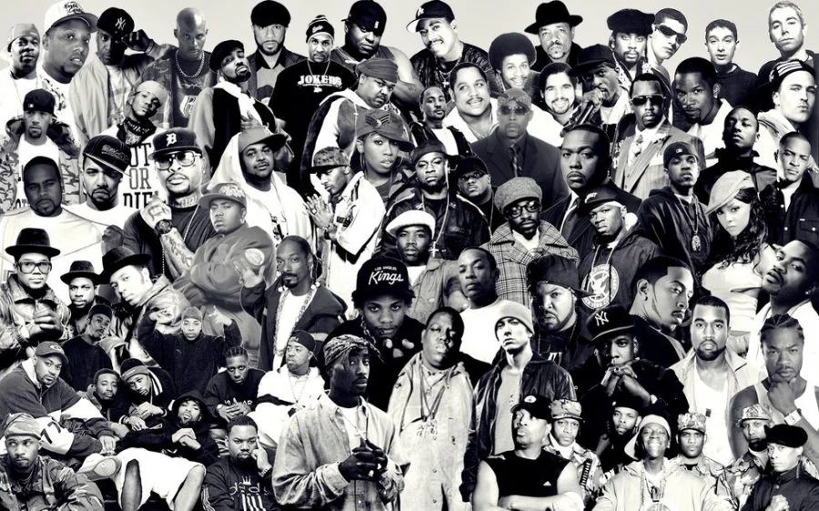
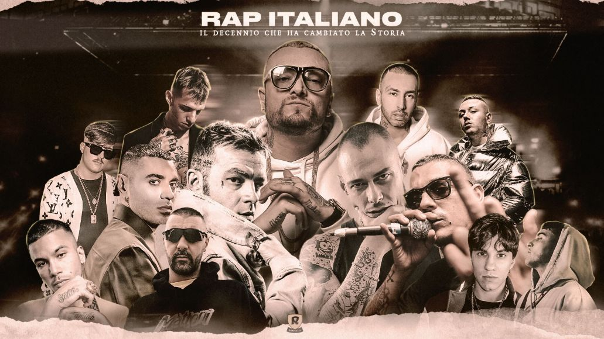

Descrizione del Rap e Hip Hop Italiano
Il rap e l’hip-hop italiano riprendono la struttura ritmica e la libertà espressiva del modello americano, adattandoli però alla lingua e alle sfumature culturali locali. Le metriche sfruttano l’italiano e i suoi dialetti creando pattern ritmici originali, con rime che spesso giocano sulla ricchezza morfologica della lingua. Dal punto di vista sonoro, si incontrano influenze trap, elettronica e addirittura elementi cantautorali, con beat che spaziano da sonorità cupe e sintetiche a produzioni più organiche. I testi trattano sia temi sociali (immigrazione, disagio urbano, disuguaglianze) sia riflessioni personali e introspective, costruendo un ponte tra lo spirito collettivo dell’hip-hop e l’attenzione alla dimensione individuale tipica della tradizione musicale italiana.
